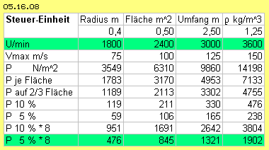
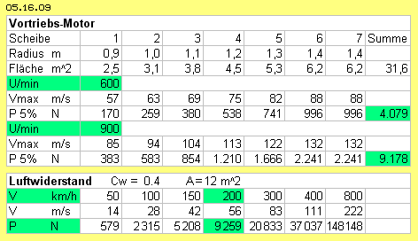
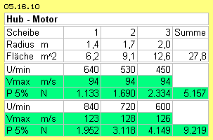
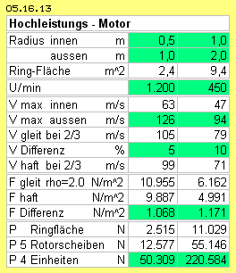

Problematik und Lösungsansatz
Anstatt Luft gewaltsam nach unten drücken zu wollen, sollte der Auftrieb per atmosphärischem Druck genutzt werden. An normalen Tragflächen streicht die Luft beschleunigt über die obere Fläche, im Mittel etwa 50 km/h schneller als entlang der unteren Fläche. Aus der Differenz der Luftströmungen ergibt sich eine Differenz der statischen Drücke und damit die Auftriebskraft.
Man kann Luftbewegung auch in einem geschlossenen Behälter erzeugen. Beispielsweise kann man die Luft innerhalb eines runden und flachen Zylinders in kontinuierliche Drehung bringen. An den oberen und unteren Innen-Flächen kann die Geschwindigkeit differenziert sein. Unabhängig von externen Luftbewegungen ergibt sich damit ein autarkes System zur Generierung von Auftrieb. Die Kräfte werden ausreichend sein für einen Helikopter (und den Vortrieb anderer Fahrzeuge).
Auf jedem Quadratmeter Fläche lastet die Luft mit mehr als 100000 N/m^2. Wenn dieser Druck nur um ein Hundertstel reduziert wird, ergibt sich eine Differenz von 1000 N/m^2 (tatsächlich erreichen normale Tragflächen ein Vielfaches). Um einen Helikopter von z.B. 3.5 Tonnen anzuheben, müsste diese Kraft auf 35 m^2 wirksam werden (einer Kreisfläche mit etwa 3 m Radius, exakte Berechnungen siehe unten). Anstelle des Rotors eines konventionellen Hubschraubers muss also eine entsprechend große, runde und flache Box installiert werden. Alternativ (bzw. bevorzugt) werden diverse kleinere Einheiten übereinander gestapelt.
Nachfolgend werden wesentliche Merkmale meiner Erfindung dargestellt. Diese Erfindung wird nicht zum Patent angemeldet. Diese Überlegungen können von jedermann frei genutzt werden. Damit werden fundamentale Fortschritte in der Aero-Technik möglich.
Die Rotorblätter bewegen sich mit geringem Abstand über die untere Innenfläche. Diese wird hier als ´Gleitfläche´ (GF, hellgrau) bezeichnet. Diese Oberfläche ist möglichst glatt, so dass die Luft mit geringem Widerstand darüber hinweg gleiten kann.
Die obere Innenfläche wird als ´Haftfläche´ (HF, grau) bezeichnet. Diese Oberfläche ist rau gestaltet, so dass die Luft verzögert wird bzw. nur langsam darüber hinweg streichen kann.
In folgendem Bild 05.16.02 sind Ausschnitte dargestellt der Bereiche zwischen der Haft- und Gleitfläche (HF und GF). Über der Gleitfläche rotieren die Rotorblätter (RB, hellblau) und bewegen sich hier von rechts nach links. Das Profil dieser Blätter ist oben und unten flach, links und rechts durch konkave Flächen begrenzt.
Dieser Behälter ist hermetisch geschlossen. Auf alle Außenseiten wirkt der normale atmosphärische Druck (siehe Pfeile bei A). Er ist damit kräfteneutral hinsichtlich dieser Einheit. Im Innern soll nun erreicht werden, dass der statische Druck auf die Haftfläche stärker ist als auf die Gleitfläche (siehe Pfeile bei B).
Das wird erreicht, wenn die Luft an beiden Flächen mit unterschiedlicher Geschwindigkeit entlang fließt. Hier gleitet die Luft mit geringem Widerstand entlang der Gleitfläche. Aufgrund der relativ hohen Geschwindigkeit weist sie starken dynamischen Druck in Strömungsrichtung auf (kinetischer Strömungsdruck) und einen entsprechend reduzierten statischen Druck (seitlich zur Strömungsrichtung).
Auch die Luft entlang der Haftfläche strömt in gleiche Richtung. Ihre Vorwärtsbewegung wird aber an der rauen Oberfläche behindert. Aufgrund ihrer relativ geringen Geschwindigkeit weist sie dort geringeren Strömungsdruck auf und entsprechend höheren statischen Druck in seitliche Richtung auf die Haftfläche.
Luft-Umwälzung
Eine Haftreibung ergibt sich hinten-oberhalb eines Rotorblatts, hier als Bereich C markiert. Die ´ruhende´ Luft an der Haftfläche hält die schnellere Strömung auf. Es werden Luftpartikel an der Rückseite des Rotors ´heraus gerissen´. Dort ergibt sich also wieder relative Leere. In diese strömt Luft von unten nach. Dieser Sog wirkt weit zurück. Entlang der Gleitfläche fließt Luft nach vorn (schneller als der Rotor darüber streicht). Vor dem rechten Rotorblatt wird Luft nach unten gesaugt. Zwischen den beiden Rotorblättern ergibt sich ein Umwälzung von Luft, wie im Bild oben rechts durch Pfeile angezeigt ist.
Dieser Bewegungsprozess ist vergleichbar mit einem Auto-Rad. Ein Punkt am Reifen ruht einen Moment lang auf der Strasse, wird hoch gerissen und beschleunigt auf die doppelte Geschwindigkeit des Autos, um dann wieder auf die Strasse hinunter zu fallen. Bei einem Kettenfahrzeug ruht ein Kettenglied etwas länger am Boden. Es wird hoch gerissen und fliegt dann mit hoher Geschwindigkeit eine lange Strecke, bis es vorn am Fahrzeug wieder auf die Strasse abgelegt wird. Hier übernimmt die Haft-Fläche die Funktion des rauen Asphalts, während die beschleunigte Bewegung entlang der Gleit-Fläche statt findet.
Sog und Druck
Der verbleibende statische Druck wirkt auf beide Flächen. Die unterschiedlichen Drücke wirken aber auch zwischen beiden Strömungen, wie durch die Pfeile bei F angezeigt ist. Daraus resultiert die bekannte Beugung von Stromlinien immer zur schnelleren Strömung hin. Daraus resultiert wiederum, dass Luft besonders widerstandsfrei um runde Flächen fließt. Dieser Effekt ist in der unteren Zeile dieses Bildes dargestellt.
Die Haft- und Gleitflächen sind hier gekrümmt. Die Druck-Differenz F drückt die schnelle Strömung ´um die Kurve´ herum. An dieser glatten Oberfläche kann also kontinuierlich eine laminare Strömung anliegen. Es existiert einerseits die relative Leere an der Sogseite D des Rotorblatts. Die konvexe Krümmung der Gleitfläche stellt ebenfalls eine zurück-weichende Wand zur tangentialen Bewegungsrichtung dar. Das bewirkt zusätzlichen Sog (siehe Pfeile bei G), durch welchen die Luftpartikel widerstandsfrei (von-sich-aus beschleunigt) um die Krümmung fliegen. Von außen nach innen strömt die Luft schneller vorwärts, bildet also einen Potentialwirbel. Im Spalt zwischen der Gleitfläche und dem Rotorblatt wird die Luft sogar schneller rotieren als der Rotor.
Rechts unten bei H ist ein weiterer Vorteil der Krümmung skizziert: wenn die Luftbewegung generell in tangentiale Richtung weist, fliegen die Luftpartikel der Innenkurve weg nach außen und entlasten die Gleitfläche. Umgekehrt fliegen die Luftpartikel auf der Außenkurve gegen die Wand und bewirken erhöhten Druck auf die Haftfläche.
Im Bild oben rechts ist noch einmal voriges Profil eines Rotorblattes (RB, hellblau) dargestellt. Die größte Relativ-Geschwindigkeit weist die Strömung gegenüber der ortsfesten Gleitfläche (GF, hellgrau) auf. Andererseits bewegt sich die Luft relativ zum Rotorblatt nur geringfügig schneller oder langsamer. Dafür könnte auch ein einfaches (und stabiles) Profil ausreichend sein, z.B. ein runder Vierkant wie bei D skizziert.
Diese Abmessungen könnten tauglich sein: der Spalt zwischen der Gleitfläche und dem Rotorblatt mit 1 cm bis 2 cm, das Rotorblatt mit 2 cm bis 4 cm Höhe, der Abstand oberhalb bis zur Haftfläche 6 cm bis 12 cm. Der ganze Hohlzylinder wird damit nur etwa 10 cm bis 20 cm hoch sein (auch bei unterschiedlichem Radius).
Unten in diesem Bild sind flache Zylinder übereinander gestapelt, wobei die Rotoren auf einer gemeinsamen Welle montiert sind. In dieser einfachen Form kann eine Rotor-Einheit relativ leicht gebaut werden. Die Masse bewegter Luft ist weniger als ein Kilogramm. Dieses System kann schnell beschleunigt werden (wozu ein ´Wischermotor´ ausreichend ist). Solche kleine Einheiten eignen sich z.B. zur Steuerung eines Hubschraubers.
Um die Fliehkräften abzufangen, sollten die Rotorblätter durch umlaufende Ringe (grün) verbunden sein. Diese Ringe können auf Gleitlagern an den Haft- und Gleitflächen geführt werden (wie hier nur grob angedeutet ist).
Unten zeigt das Bild eine Sicht von oben. Zwischen den Ringen können außen auch zusätzliche Rotorblätter installiert werden, so dass die Luft gleichmäßig in Bewegung gehalten wird.
Bei dieser Kegel-Variante schieben die Rotorblätter die Luftmasse nicht nur auf einer horizontalen Ebene im Kreis herum. Hier saugen die Rotorblätter die Luft um die gekrümmte Fläche des Kegelmantels herum. Damit ergibt sich der Sog-Effekt, welche oben in Bild 05.16.02 bei G dargestellt und erläutert wurde. Widerstandslos folgt die Strömung der Krümmung. Es kommt sogar ein Potentialwirbel auf mit (selbst-) beschleunigender Wirkung.
Nur bei kleinen Systemen ist obige flache Bauweise geeignet. Bei größeren Systemen müssen die Flächen kegelförmig angestellt sein und es müssen auch diese Ringe installiert werden. Damit ergeben sich steife Flächen und ein ebenso steifer ´Rotor-Käfig´, der selbst mit den relativ dünnen Profilen ausreichend stabil ist, auch für ausreichend hohe Drehzahl. Solche (mehrstufige) Einheiten sind z.B. geeignet für den Vortrieb eines Hubschraubers (oder auch anderer Fahrzeuge).
Glocken-Motor
Um eine möglichst leichte und dennoch stabile Konstruktion zu erreichen, sollte auf eine zentrale Welle verzichtet werden. Die schalenförmigen Haft- und Gleit-Flächen können dann durchgängig ausgeführt werden. Der Rotor reicht dann nicht mehr bis zur Systemachse, sondern endet mittig in einem Zahnkranz (ZK, dunkelgrün). An einer (nun stabil gelagerten) Welle ist ein Zahnrad (ZR, dunkelblau) montiert, welches den Rotor per Zahn-Eingriff antreibt.
Aufgrund der gekrümmten Profile (blau) und den umlaufenden Ringen (grün) ist der Rotor-Käfig leicht und stabil zu bauen. Allerdings muss er außen in Roll-Lagern (RL, dunkelgrün, vorzugsweise drei) abgestützt werden. Auch der mittige Zahnkranz muss (durch Gleit- oder Roll-Lager) in seiner Position geführt werden.
Diese Bauweise des Glocken-Motors ist bei großen Systemen einzusetzen, z.B. um die Hubarbeit bei Helikoptern zu leisten. Es könnten auch mehrere Schalen übereinander installiert werden. Andererseits ergeben ineinander geschachtelte Schalen besondere Vorteile.
Mehrfach-Glocke
Es sind drei Rotor-Käfige (hellblau) installiert, die jeweils mittig einen Zahnkranz (dunkelgrün) aufweisen. Jeder Rotor wird angetrieben über ein Zahnrad auf einer separaten Welle (dunkelblau) mit eigenem Motor (hier nur angezeigt für R1-M1 und R2-M2. Versetzt angeordnet ist R3-M3). Damit kann jeder Rotor mit einer Drehzahl nach Bedarf gefahren werden.
Der große Rotor R1 könnte z.B. für die Grundlast ausgelegt sein. Der mittlere Rotor R2 könnte für die aktuelle Nutzlast dienen. Der kleine Rotor R3 kann rasch beschleunigt werden zum Abheben und Aufsteigen nach Bedarf. Die Kapazitäten sollten so ausgelegt sein, dass auch bei Ausfall eines Teilsystems genügend Reserve vorhanden ist. Vorzugsweise sollten dazu Elektro-Motoren eingesetzt werden. Handelsübliche Notstrom-Aggregate (wiederum zwei mal redundant) werden ausreichend Leistung liefern. Hoher Bedarf ist nur zum Starten und Beschleunigen erforderlich (wobei die Teilsysteme getrennt noch gefahren werden). Im laufenden Betrieb sind praktisch nur Reibungsverluste zu überwinden.
Neues Hubschrauber-Design
Die Kontur der Kabine (A, grau) hat einen runden Bug und ist nach hinten auslaufend. Die Kontur (B, grün) des Helikopters weist über die Kabine hinaus, sowohl vorn über den Bug, seitlich flach auslaufend und auch nach hinten in eine breite ´Flosse´. Damit wird eine breite, gerundete Kuppel C gebildet.
Unter dieser ´Kuppel-Tragfläche´ hängt eine relative hohe Kabine. Die Sicht von vorn zeigt die maximale Breite. Die Kabine hat vorn einen runden Bug und ist nach hinten schmal auslaufend. Der großvolumige Nutzraum ist damit relativ strömungsgünstig gebaut.
In der unteren Zeile des Bildes ist die Position der Triebwerke dargestellt. In der Kuppel befindet sich der Auftriebs-Motor (D, rot), hier z.B. mit drei ineinander geschachtelten Glocken. Der Bereich für den Antrieb der Rotoren ist grün markiert.
Anstelle der verstellbaren Rotoren konventioneller Hubschrauber erfolgt hier der Vortrieb durch einen Motor mit horizontaler Welle, hier in Form eines Kegel-Motors (E, rot). Zur optimalen Nutzung des Raums sind die Radien unterschiedlich lang.
Anstelle des konventionellen Hilfsrotors sind auch die zur Steuerung erforderlichen Komponenten in den Rumpf integriert. Eingezeichnet sind hier zwei Einheiten (F, rot). Es sind einfache Scheiben mit relativ kurzen Radien eingesetzt, so dass die Rotoren rasch zu beschleunigen sind. Die Einheiten sind dreh- und schwenkbar gelagert. Beim Start sind beide gegeneinander gerichtet, so dass sich die Schubkräfte neutralisieren. Wenn beide nach hinten geschwenkt werden, ergibt sich Vortrieb. Wenn beide nach vorn geschwenkt werden, fliegt der Helikopter rückwärts. Wenn beide seitlich gedreht werden, dreht der Helikopter um seine vertikale Achse.
Der hier konzipierte Helikopter könnte folgende Abmessungen aufweisen: insgesamt etwa 8 m lang und breit, etwa 4 m hoch. Der frei nutzbare Raum der Kabine ist etwa 3 m lang, breit und hoch (im Doppel-Boden ist Raum für Tanks, Stromaggregate und Starterbatterien). Der Hub-Rotor (D) hat einen Durchmesser von rund 4 m, der Vortriebs-Rotor (E) knapp 3 m, die Steuer-Rotoren (F und G) etwa 1 m. Damit bleibt die Frage, welche Kräfte diese Aggregate bei welcher Drehzahl bewirken können.
Berechnung wirksamer Kräfte
Die Differenz aus dem dynamischen Strömungsdrücken ergibt zugleich die Differenz der statischen Drücke. Diese lasten hier auf Kreisflächen. Mit zunehmendem Radius wächst die Fläche im Quadrat. Die Geschwindigkeit wächst linear an, hinsichtlich der Kräfte wirkt sie aber ebenfalls im Quadrat. Der wesentliche Anteil des Drucks wird also in den äußeren Bereichen erzeugt. Exakte Daten müssten per Integral ermittelt werden. Eine überschlägige Rechnung ergibt durchaus brauchbare Werte, wenn die Druckverhältnisse am Rand der Scheibe auf zwei Drittel der Kreisfläche angewandt werden. Es kann auch vereinfachend unterstellt werden, dass die Geschwindigkeits-Differenz obiger 5 % eine entsprechende Druck-Differenz ergibt (zumal diese Werte nur empirische zu ermitteln sind).
Kraft an den Steuerelementen 
In der normalen Flugphase wird der Helikopter mit den Leitwerken gesteuert. Die interne Steuerung ist nur erforderlich im Schwebeflug und bei der Landung, wenn eine Position exakt anzusteuern ist. Im Normalfall weisen beide Einheiten gegen einander. Beim Schwenken bzw. Drehen stehen obige Schubkräfte spontan zur Verfügung. Solche Luft-Druck gesteuerte Flieger erzeugen keine äußere Luftbewegung, sie starten und schweben und landen völlig ruhig. Aus eigener Kraft können sie sogar in den Hangar schweben.
Vortriebs-Schub-Kräfte 
Unten ist der Luftwiderstand bei unterschiedlichen Geschwindigkeiten ermittelt nach der bekannten Formel F= 0.5*A*rho*v^2*Cw. Als Fläche A werden hier 12 m^2 eingesetzt, die Dichte rho mit 1.25 kg/m^3 und der Widerstand-Beiwert Cw mit 0.4 (das ist ein hoher Ansatz, weil z.B. etwa 0.15 bei Segelflugzeugen erreicht wird).
Der obige Vorschub von etwa 9000 N wäre tauglich für eine Reise-Geschwindigkeit dieses Helikopters von rund 200 km/h (grün unterlegt).
In der Tabelle ist auch ausgewiesen, dass bei Verdopplung der Geschwindigkeit (auf 400 km/h und 800 km/h, unten rechts) der Luftwiderstand im Quadrat ansteigt (4-fach und 16-fach). Aus diesem Grunde fliegen Verkehrsflugzeuge oben in dünner Luft (Dichte etwa 0.4 kg/m^3), wo der Luftwiderstand nurmehr ein Drittel ist. Allerdings ist dort oben auch die Leistung der konventionellen Vortriebs-Maschinen entsprechend gering.
Im Gegensatz dazu ist hier in den hermetisch geschlossenen Behältern der Luftdruck konstant und damit auch die Leistung unabhängig von äußeren Bedingungen. Es kann sogar mit höherer Dichte gefahren werden, z.B. mit rho = 2 kg/m^3. Der Vorschub wird um die Hälfte stärker, hier z.B. auf etwa 13500 N ansteigen.
Bei diesen Kegel-Motoren wird die Luft um eine gekrümmte Fläche gezogen. Wie oben ausgeführt, wird die konvexe Gleitfläche entlastet, während die Strömung an der konkaven Haftfläche entlang ´schrammt´. Hier wurde eine Differenz von nur 5 % unterstellt, z.B. bei 132 km/h eine Verzögerung auf 125 km/h. Durchaus realistisch könnte die Strömung an der Haftfläche nur 119 km/h oder eventuell nur 112 km/h ´langsam´ sein. Damit wird der Vorschub doppelt oder dreifach stärker, hier also 18000 N oder auch 27000 N aufweisen. Somit wird dieser Luft-Druck-Kegel-Motor mehr als genug Vorschub für diesen Helikopter liefern.
Hub-Kräfte 
In der Tabelle wurden die Hubkräfte ermittelt bei einer Drehgeschwindigkeit von jeweils 94 m/s und nochmals bei ein Drittel höherer Geschwindigkeit (123 m/s, 128 m/s und 126 m/s). Es ergeben sich Hubkräfte von etwa 5000 N bis 9000 N (grün unterlegt). Damit könnte ein Helikopter von fünf Tonnen Gewicht in der Schwebe gehalten werden. Sogar bei Ausfall des großen Rotors wären dazu die beiden kleineren Rotoren ausreichend.
Dieser Motor könnte auch etwas kleiner gebaut werden oder sehr viel mehr Hubkraft erzeugen, wie oben schon erwähnt. Anstatt mit normalem Luftdruck könnte er mit ´dicker´ Luft gefahren werden (z.B. mit rho=2, etwa Faktor 1.5). Bei dieser optimalen Glocken-Form wird die Verzögerung an den Haftflächen nicht nur die 5 % (wie hier gerechnet), sondern auch 10 % und mehr betragen (Faktor 2 bis 3). Es ergeben sich Kräften bis zu 40 kN - was völlig neue Möglichkeiten eröffnet.
Woher kommt die Energie
Bei oben beschriebener neuer Helikopter-Konstruktion ist das Volumen aller Radial-, Kegel- und Glocken-Behälter insgesamt nur 12 m^3. Jeder Partikel dieser Luftmasse von etwa 10 kg ist in ständiger molekularer Bewegung mit etwa 500 m/s. Nach bekannter Formel E=0.5*m*v^2 entspricht das der enormen Energie von 1.250.000 J. Gegen eine Wand treffen die Partikel nicht immer rechtwinkelig, sondern im Mittel in einem Winkel von 45 Grad, also mit 0.7 der lotrechten Kraft. Der statische Druck auf eine Wand ist (bei rho=1.25 kg/m^3 und v=500 m/s) nach bekannter Formel P=0.5*rho*v^2 also 156250 N/m^2. Davon etwa 0.7 ergeben den ´normalen´ atmosphärischen Druck von rund 100000 N/m^2. Nur ein Hundertstel davon, diese 1000 N/m^2, würden ausreichend Hub- und Schubkräfte ergeben.
In den scheibenförmigen Behältern rotiert die Luft. Die Partikel schrammen in flacherem Winkel an den Wänden entlang. Der lotrechte Druck auf die Wände wird damit reduziert. Es gilt das strenge Gesetz der Energie-Konstanz: wenn ein Partikel vermehrt Druck nach vorn ausübt, kann er nur entsprechend geringeren Druck zur Seite hin ausüben. Die kinetische Energie der Strömung wird nicht genutzt, sie läuft ungehindert ins Leere, immer nur im Kreis herum. Tatsächlich wird hier nur der ´Neben´-Effekt genutzt: die schnellere Strömung bewirkt geringeren statischen Druck auf die seitliche Wand als die langsamere Strömung.
Beim Starten des Systems wird die eingeschlossene Luftmasse in Rotation versetzt. Bei langsamem Start wird aber keine ´Wärme´ zugeführt, die molekulare Geschwindigkeit der Partikel nicht beschleunigt. Die Partikel folgen dem Sog der Rotorblättern von sich aus. Die Energie der Luftmasse bleibt nahezu konstant. Es wird dabei nur die originär chaotische Bewegung der Partikel ein klein wenig geordnet. Aber selbst bei Strömungen von 100 m/s fliegen die Partikel noch immer mit 500 m/s umher, nur eben etwas bevorzugt in eine Richtung, bevorzugt entlang der gekrümmten Flächen im Kreis herum.
Es ist Energie-Input erforderlich beim Starten (und Beschleunigen) der Systeme, im laufenden Betrieb aber nur für Reibungsverluste. Der Energie-Input ist nur der Auslöser (und nicht die Energie-Quelle) der generierten Kräfte. Nur die Nebenwirkung, nur der (reduzierte!) statische Druck an den Haft- und Gleitflächen wird genutzt. Die wirksamen Kräfte korrelieren also nicht mit dem Energie-Input. Im laufenden Betrieb dreht der Rotor praktisch synchron mit der Luft seiner direkten Umgebung. Obwohl die Maschine volle Leistung bringt, ist der Energie-Input minimal - zumindest im Vergleich zur üblichen Technik bei Luftfahrzeugen.
Diese Effekte treten an jeder Tragfläche zweifelsfrei auf. Hier werden diese Bewegungsprozesse - invers - in einem geschlossenen System umgesetzt. Mit einfacher und bekannter Technik ist dieses Prinzip in vielfältiger Weise zweckdienlich zu nutzen. Es ist ein klares Beispiel für die Nutzung und den Gebrauch gegebener und frei verfügbarer Energie (ohne diese zu reduzieren oder zu ´verbrauchen´).
Grundlegendes Prinzip
Dieses theoretisch und praktisch belegte Faktum wird bei diesen Druckluft-Glockenmotoren in einem geschlossenen Behälter (C) abgebildet. Zwischen zwei Flächen, oben der Haft- und unten der Gleitfläche (HF und GF bei C), wird ein ´künstlicher Wind´ durch die Rotorblätter (RB, blau) erzeugt. Es ist dazu nochmals geringerer Antrieb erforderlich, weil nur ein relativ geringes Luftvolumen permanent in Rotation zu halten ist. Der Rotor und die Luft bewegen sich fast gleich schnell, entlang der Gleitfläche etwas schneller, entlang der Haftfläche etwas langsamer (siehe Pfeile bei D). Daraus resultieren unterschiedliche seitlich wirkende Kräfte, welche die Schubkraft nach oben ergeben (siehe Pfeile bei E).
Die Differenz der Geschwindigkeiten kommt zustande, wenn der Abstand der Rotorblätter zur Haftfläche größer ist als zur Gleitseite hin. Dazu trägt wesentlich bei, wenn die Haftflächen möglichst raue Struktur aufweisen, die Gleitflächen aber möglichst glatt sind. Ganz wesentlich verstärkt wird der unterschiedliche Andruck bei den kegel- und glockenförmigen Motoren (bei F). Die Rotorblätter saugen die Luft widerstandsfrei um konvex gekrümmte Gleitflächen (G), wogegen die Strömung stark verzögert wird an den konkaven Haftflächen.
Diese Effekte treten an jeder Tragfläche (und generell an gekrümmten Oberflächen) zweifelsfrei auf. Hier werden die Bewegungsprozesse in einem geschlossenen System umgesetzt. Mit einfacher und bekannter Technik ist dieses Prinzip in vielfältiger Weise zweckdienlich zu nutzen.
Hochleistungs-Schub-Motor
Der Rotorkäfig (grau, siehe C) ist nun ebenfalls ringförmig. Die radialen ´Rotor-Blätter´ sind außen und innen in einem Ring zusammen gefasst (eventuell auch mittig noch einmal verbunden). Die Ringe sind jeweils durch drei Roll-Lager konzentrisch zu führen. Innen weist jeder Rotor-Käfig einen Zahnkranz auf. Der Antrieb erfolgt jeweils über ein Zahnrad (blau) auf einer gemeinsamen Welle und einem Motor (M, grün). Es können mehrere Rotoren (hier z.B. fünf) zusammen eine Einheit bilden. Zur Wartung kann jede autonome Vortriebs-Einheit komplett ausgetauscht werden (´plug-in´ bzw. wie Gepäck-Container, siehe D).
In der Tabelle 05.16.13 sind Daten aufgelistet. Links in einer kleinen Version ist der Innen-Radius 0.5 m und der Außen-Radius 1.0 m. Rechts bei einer größeren Version sind die Radien 1.0 m und 2.0 m. Die ringförmige wirksame Flächen sind 2.4 m^2 bzw. 9.4 m^2.
Die kleine Version wird mit 1200 Umdrehungen je Minute gefahren, die große mit nur 450 U/min. Die maximale Geschwindigkeit am äußeren Rand sind dann (durchaus machbare) 126 m/s bzw. 94 m/s. Der gewichteter Mittelwert wird bei 2/3 der Radien angenommen, also mit einer mittleren Geschwindigkeit von 105 m/s und 79 m/s gerechnet.

In großer Höhe müssen die Behälter ohnehin hermetisch geschlossen sein, so dass die Maschine auch mit größerer Dichte zu fahren ist. Hier ist z.B. rho = 2.0 kg/m^3 angesetzt. Für beide Versionen ist hier der kinetische Strömungsdruck ausgewiesen für die schnelle und die reduzierte Geschwindigkeit. Die Differenz des kinetischen Strömungsdrucks ist bei der kleinen Version 1068 N/m^2 und bei der großen Version 1171 N/m^2. Diese Differenz von rund 1000 N/m^2 ist zugleich die Differenz des statischen Drucks auf die Haft- und Gleitflächen.
Eingangs wurde dieses eine Hundertstel des atmosphärischen Drucks als Ziel genannt (1 kN/m^2 von 100 kN/m^2). Das ist mit diesen beiden Versionen erreicht und ist realistisch machbar mit vielen Varianten. Um gewünschte Schubkräfte zu erreichen, müssen entsprechend große wirksame Flächen eingesetzt werden. Hier hat die kleine Version 2.4 m^2 Fläche, es sind 5 Rotorebenen vorgesehen und bei 4 solcher Einheiten ergeben sich rund 50 kN Schub. Bei der großen Version mit 9.4 m^2 Fläche ergeben sich hier 220 kN - also die Größenordnung z.B. einer A320.
Konsequenzen
Analog zur oben diskutierten Konzeption eines Helikopters sind viele Varianten machbar. Wie bei den Autos wird es für unterschiedliche Zwecke alle Arten von Helikoptern geben. Moderne Fahrzeuge haben viele Assistenz-Systeme, manche bewegen sich schon autonom auf den Strassen. Analog dazu könnte das Heli-Fliegen zur alltäglichen Realität werden - mit diversen (positiven und möglicherweise negativen) Konsequenzen. Es gibt auch Verkehr auf Strassen und Schienen, auf dem Wasser und im luftleeren Raum - und überall wäre autonomer Vortrieb von Vorteil.
Das ist keine Science-Fiction. Es ist nur eine sinnvolle Nutzung von Neben-Effekten des bekannten Verhaltens molekularer Bewegung der Luftpartikel. Es ist jedermann überlassen, sinnvolle Konsequenzen daraus zu ziehen. Diese Erfindung wird nicht zum Patent angemeldet, diese Überlegungen stehen als open-source frei zur Verfügung.
Evert / 31.12.2015
Der Vortrieb durch Propeller ist problematisch, weil vorwiegend eine Drallströmung erzeugt wird. Es wird auch Luftbewegung per Sog erzeugt, aber beide Komponenten werden nicht in Vorschub umgesetzt. Die Propeller-Triebwerke konventioneller Hubschrauber sind noch weniger effektiv. Mit viel Lärm produzieren sie stürmische Winde und verbrauchen viel Treibstoff. Ihre Reichweite ist relativ gering. Schon in Höhenlagen des Gebirges kommen sie an ihre Leistungsgrenze. Bauelemente und Luftbewegungen
Bauelemente und Luftbewegungen
In Bild 05.16.01 sind prinzipielle Bauelemente skizziert, oben im Querschnitt und unten im Längsschnitt durch die Systemachse. Ein hermetisch geschlossener Behälter (grau) hat einen runden Querschnitt und ist sehr viel breiter als hoch. Im Zentrum rotiert eine Welle (dunkelblau, hier rechtsdrehend), an welcher diverse (hier vier) Rotorblätter (RB, hellblau) montiert sind. Alle Luft (hellrot) in diesem Hohl-Zylinder wird damit in Rotation um die Systemachse versetzt.
 Hier schiebt das rechte Rotorblatt (RB, hellblau) die Luft nach links. Es ist dazu kaum Druck auszuüben, weil die Luft dem linken Rotorblatt ´von sich aus´ folgt. Jede zurück-weichende Wand hinterlässt relative Leere, in welche die Luftpartikel hinein fallen, bis zur Schallgeschwindigkeit.
Hier schiebt das rechte Rotorblatt (RB, hellblau) die Luft nach links. Es ist dazu kaum Druck auszuüben, weil die Luft dem linken Rotorblatt ´von sich aus´ folgt. Jede zurück-weichende Wand hinterlässt relative Leere, in welche die Luftpartikel hinein fallen, bis zur Schallgeschwindigkeit.
Die Luftbewegung innerhalb des Zylinders wird also vorrangig durch den Sog an den Hinterseiten der Rotorblätter ausgelöst. Diese Sogseiten D sind in der mittleren Zeile dieses Bildes nochmal hervor gehoben. Eine Reihe von Punkten repräsentiert die nahezu ortsfeste Luft direkt an der Haftfläche. Unterhalb davon ist die Luft in Vorwärtsbewegung, aber langsamer als die Strömung direkt über der Gleitfläche (siehe horizontale Pfeile unterschiedlicher Länge). Beide Strömungen haben unterschiedlichen Strömungsdruck. Daraus resultiert die Differenz statischen Drucks auf die Haft- und Gleitfläche (siehe vertikale Pfeile bei E) und somit die gewünschte Auftriebskraft. Konstruktive Merkmale
Konstruktive Merkmale
In Bild 05.16.03 sind einige Details skizziert. Die Haftfläche (HF) sollte eine möglichst raue Oberfläche aufweisen, z.B. wie ein Schleifpapier (siehe A). Ein Draht weist relativ hohen Luftwiderstand aus. Die Oberfläche könnte mit einem Gitter dünner Drähte belegt sein, auch versetzt in mehreren Lagen (siehe B). Es sind Testreihen zu fahren, um geeignete Oberflächen einfacher Herstellung zu finden. Die Gleitfläche (GF) muss eine möglichst glatte Oberfläche aufweisen. Zur größeren Stabilität könnten bei Bedarf konzentrisch angelegte Rillen beitragen (siehe C). Kegel-Motor
Kegel-Motor
Alle Auftriebskräfte drücken die planen Haftflächen nach oben, die entsprechend steif zu bauen sind. Wesentlich steifer sind Flächen in Form eines Kegel-Stumpfes. Es wäre also vorteilhaft, die Behälter kegelförmig anzuordnen, wie in Bild 05.16.04 oben im Längsschnitt durch die Systemachse skizziert ist. Auch in dieser Version können mehrere Ebenen aufeinander geschachtelt und alle Rotoren auf einer Welle montiert sein, die von einem Motor (M, grün) angetrieben wird.
 In den zentralen Bereichen sind die Luftströmungen langsam, so dass nur wenig Auftrieb zustande kommt. Die Geschwindigkeit steigt linear mit zunehmendem Radius, die Strömungsdrücke mit dem Quadrat dazu. Ebenfalls im Quadrat zum Radius ergibt sich die Fläche, so dass der wesentliche Anteil des Auftriebs in den äußeren Bereichen zustande kommt. Mittig könnte also der Kegel relativ flach, außen jedoch steiler angestellt sein. Eine glocken-förmige Bauweise erfüllt diese Anforderungen. In Bild 05.16.05 ist dieses Prinzip skizziert, oben mit einem Querschnitt durch die Systemachse, unten mit einer Sicht von oben.
In den zentralen Bereichen sind die Luftströmungen langsam, so dass nur wenig Auftrieb zustande kommt. Die Geschwindigkeit steigt linear mit zunehmendem Radius, die Strömungsdrücke mit dem Quadrat dazu. Ebenfalls im Quadrat zum Radius ergibt sich die Fläche, so dass der wesentliche Anteil des Auftriebs in den äußeren Bereichen zustande kommt. Mittig könnte also der Kegel relativ flach, außen jedoch steiler angestellt sein. Eine glocken-förmige Bauweise erfüllt diese Anforderungen. In Bild 05.16.05 ist dieses Prinzip skizziert, oben mit einem Querschnitt durch die Systemachse, unten mit einer Sicht von oben.
 Diese Variante ist in Bild 05.16.06 mit einem Querschnitt schematisch dargestellt. Es sind hier drei Rotor-Ebenen (R1, R2 und R3) mit unterschiedlichen Radien zusammen montiert. Die Haft- und Gleitflächen der mittleren Glocke grenzt unmittelbar an die Flächen der oberen und unteren Ebene. Alle Behälter sind unten-außen miteinander verbunden. Auch in der Mitte sind alle Flächen mit einem Rohr (gelb) fest verbunden. Die runden und gewölbten Flächen bilden einen stabilen Baukörper.
Diese Variante ist in Bild 05.16.06 mit einem Querschnitt schematisch dargestellt. Es sind hier drei Rotor-Ebenen (R1, R2 und R3) mit unterschiedlichen Radien zusammen montiert. Die Haft- und Gleitflächen der mittleren Glocke grenzt unmittelbar an die Flächen der oberen und unteren Ebene. Alle Behälter sind unten-außen miteinander verbunden. Auch in der Mitte sind alle Flächen mit einem Rohr (gelb) fest verbunden. Die runden und gewölbten Flächen bilden einen stabilen Baukörper.
Die obigen Luftdruck-Maschinen in Scheiben-, Kegel- und Glocken-Form können in vielfältiger Form kombiniert werden. Dabei wird das Design von Fluggeräten andere Merkmale aufweisen. In Bild 05.16.07 ist beispielhaft die neuartige Konzeption eines Helikopters skizziert, oben links in einer Sicht von oben, rechts die Sicht von vorn und eine Seitenansicht. Vorn entspricht die Kuppel der Nase einer Tragfläche. Seitlich geht die Kuppel über in kurze Tragflächen, an denen außen-hinten Steuerklappen (dunkelgrün) montiert sind. Ganz hinten sind Höhen- und Seiten-Leitwerke (dunkelgrün) installiert. Die flache Kuppel mit ihrem Tragflächen-Profil wird im Horizontal-Flug zum Auftrieb beitragen. Diese Form weist also Merkmale eines (relativ kompakten) Flugzeugs aus.
Vorn entspricht die Kuppel der Nase einer Tragfläche. Seitlich geht die Kuppel über in kurze Tragflächen, an denen außen-hinten Steuerklappen (dunkelgrün) montiert sind. Ganz hinten sind Höhen- und Seiten-Leitwerke (dunkelgrün) installiert. Die flache Kuppel mit ihrem Tragflächen-Profil wird im Horizontal-Flug zum Auftrieb beitragen. Diese Form weist also Merkmale eines (relativ kompakten) Flugzeugs aus.
Bei den folgenden Berechnungen wurden diese generellen Gesichtspunkte beachtet: hier wird vorwiegend mit Sog gearbeitet, der nur bis zur Schallgeschwindigkeit wirken kann. Wichtig sind möglichst klare Strömungsverhältnisse, darum wird hier maximal nur halbe Schallgeschwindigkeit gefahren (bis etwa 150 m/s), in aller Regel noch langsamer. Es wird unterstellt, dass die Luftströmung nur so schnell ist wie der Rotor dreht. Die Effekte obiger Luft-Umwälzung und der Selbst-Beschleunigung von Potentialwirbeln sind nicht einbezogen. Es wird unterstellt, dass die Strömungen an den Haftflächen etwa 10 % langsamer sind als entlang der Gleitflächen. Brauchbare Werte ergeben sich aber auch schon bei einer Differenz von nur 5 %.
Natürlich kommt hier die Frage auf, aus welcher Energie-Quelle diese Kräfte zustande kommen sollten. Die Technik konventioneller Hubschrauber ist selbst-verständlich: die chemische Energie des Treibstoffs wird in Bewegung mechanischer Teile transformiert und über die Rotorblätter in die Abwärtsbewegung von Luft umgesetzt. Wenn der Rotor eines Hubschraubers 6 m lang ist, bestreicht er eine Fläche von 113 m^2. Das Gewicht von 3500 kg entspricht ein Luft-Volumen von 2800 m^3, einer Luftsäule von 25 m über der Rotorfläche. Permanent muss diese Luftmasse abwärts beschleunigt und mit der Geschwindigkeit eines Orkans hinab gedrückt werden. Allerdings weicht die Luft jedem Druck aus, so dass hier die Effizienz noch einmal geringer ist als bei üblicher Energie-Umwandlung.
Für alle Skeptiker sei das grundlegende Prinzip noch einmal klar zum Ausdruck gebracht. Wenn das in Bild 05.16.11 skizziert Profil A durch die Luft bewegt wird, bedarf es einer Vortriebskraft entsprechend seines Luftwiderstandes. Das Profil B weist nur halb so große Fläche auf, der Luftwiderstand ist geringer und damit auch der erforderliche Vortrieb. Durch die Asymmetrie treten nun einseitige Kräfte auf. Durch die Differenz statischer Drücke ergibt sich eine Auftriebskraft. Diese ist mehrfach stärker als der erforderliche Vortrieb. Bei optimalen Bedingungen beträgt der Luftwiderstand (auch bei 180 km/h) nur ein Zehntel des Gewichtes eines Segelflugzeuges. Der motorische Vortrieb bei Flugzeugen ist nur zur Überwindung des Luftwiderstandes erforderlich. Die resultierende Auftriebskraft basiert ausschließlich auf dem atmosphärischen Luftdruck bzw. dessen Manipulation an der oberen und unteren Seite der Tragfläche. Durch Sogwirkung hinten-oben fallen die Luftpartikel nach hinten-unten und erzeugen eine Strömung. Der Sog breitet sich aus nach vorn, jedoch nur bis zur Schallgeschwindigkeit. Durch die Differenz der Strömungs-Geschwindigkeiten über alle Oberflächen ergibt sich die Differenz statischen Drucks und damit der Auftrieb.
Der motorische Vortrieb bei Flugzeugen ist nur zur Überwindung des Luftwiderstandes erforderlich. Die resultierende Auftriebskraft basiert ausschließlich auf dem atmosphärischen Luftdruck bzw. dessen Manipulation an der oberen und unteren Seite der Tragfläche. Durch Sogwirkung hinten-oben fallen die Luftpartikel nach hinten-unten und erzeugen eine Strömung. Der Sog breitet sich aus nach vorn, jedoch nur bis zur Schallgeschwindigkeit. Durch die Differenz der Strömungs-Geschwindigkeiten über alle Oberflächen ergibt sich die Differenz statischen Drucks und damit der Auftrieb.
In Bild 05.16.12 sind relativ große Motoren skizziert, bei A und B im Längsschnitt durch die Systemachse, bei C mit einer Sicht auf den Rotor-Käfig. Bei D und G ist angezeigt, wie z.B. vier Einheiten nebeneinander im Rumpf eines Verkehrs-Flugzeugs einzufügen sind. Bei E und F ist angezeigt, wie z.B. vier Einheiten hintereinander im Heck anzuordnen sind. Der zentrale Bereich dieser Motoren trägt aufgrund langsamer Strömungen auf kleinen Flächen nur geringfügig zur Leistung bei. Dieser Bereich ist besser genutzt, wenn dort die ortsfesten Behälter stabil zusammen gebaut sind. Auch die Welle (blau, außermittig) ist darin gut zu lagern. Die nun ringförmigen Scheiben können in Form eines Kegelstumpfes (bei A) oder glocken-förmig (bei B) angelegt sein.
Der zentrale Bereich dieser Motoren trägt aufgrund langsamer Strömungen auf kleinen Flächen nur geringfügig zur Leistung bei. Dieser Bereich ist besser genutzt, wenn dort die ortsfesten Behälter stabil zusammen gebaut sind. Auch die Welle (blau, außermittig) ist darin gut zu lagern. Die nun ringförmigen Scheiben können in Form eines Kegelstumpfes (bei A) oder glocken-förmig (bei B) angelegt sein.
Diese Luftdruck-Glockenmotore erfordern in etwa einen Antrieb, wie sie bei solchen Fliegern für sonstige Hilfsfunktionen anfallen. Es sind kleinere Treibstoff-Tanks ausreichend. Es müssen nicht mehr komplexe externe Triebwerke gebaut und gewartet werden. Die neuen Maschinen sind viel einfacher und leichter zu bauen. Sie verhalten sich wie (sehr große) Segelflugzeuge mit entsprechend geringer Lärmbelästigung und Luftverwirbelung. Die Konsequenzen für Flughäfen - und sonstige Gesichtspunkte - mag jeder selbst bedenken.
ap0516.pdf
ist eine Druck-Version dieses Kapitels,
ap0516a.pdf
ist eine verkürzte Druck-Version.
Aero-Statik des Glockenmotors
Aero - Technologie